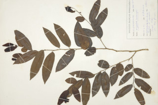

Images :



| Habit : | Trees up to 12 m tall. |
| Leaves : | Leaves simple , alternate , distichous ; stipule triangular, acute , caducous ; petiole 0.4-1 cm long, nearly glabrous , planoconvex in cross section; lamina 5- 9.5 x 1.5-3.5 cm, elliptic-oblong to elliptic-ovate , apex acute or slightly acuminate with blunt tip, base asymmetric , margin serrate , chartaceous , dark green and shining, glabrous ; midrib nearly flat above; secondary_nerves 9-12 pairs, slender; tertiary_nerves reticulate . |
| Inflorescence / Flower : | Flower unisexual ; male flowers in axillary clusters; female flowers axillary , solitary . |
| Fruit and Seed : | Drupe , ellipsoid , with persistent style ; seed 1. |